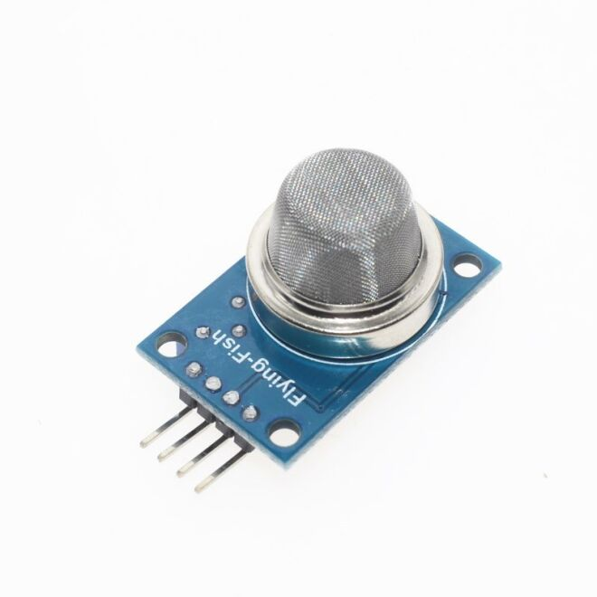
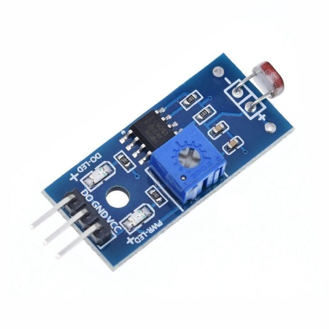
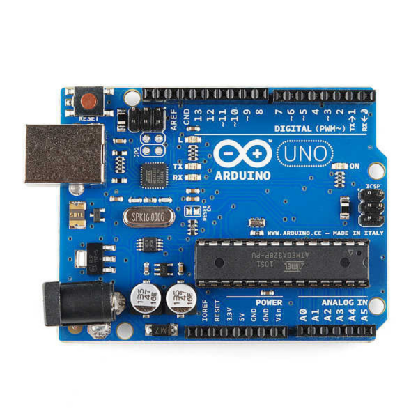

Giriş
Seralar, bitkilerin büyüme koşullarını yıl boyunca kontrol altına alan yapılar olarak tarımsal üretimde kritik rol oynar. Optimum sıcaklık, nem ve ışık dengesi sayesinde ürün verimliliği ve kalitesi artar. Bu çalışmada, sensör tabanlı bir otomasyon sistemi ile sera iç ortamı gerçek zamanlı izlenir ve düzenlenir.
Sera Tarihçesi & Modern Uygulamalar
Roma İmparatorluğu (M.S. 30): İmparator Tiberius’un taze salatalık talebini karşılamak için ilk örtülü tarım yapısı geliştirildi.
Kore, 15. Yüzyıl: Joseon Hanedanlığı’nda ondol ısıtmalı seralar kışın sebze yetiştirdi.
Hollanda, 17–18. Yüzyıl: Cam ve metal seralar modern mimarinin temelini attı.
19. Yüzyıl Avrupa: Dökme demir ve cam panellerle tropikal bitkiler yetiştirildi.
20. Yüzyıl: Polietilen örtüler ve otomatik sistemler verimliliği artırdı.
21. Yüzyıl: IoT ve veri analitiği ile akıllı seralar otonom kontrol sundu.
Amaç ve Kapsam
Arduino Uno üzerinde toprak nemi, ışık, sıcaklık ve hava kalitesi sensör verileri işlenir. Kontrol algoritmaları röle tabanlı pompa ve aydınlatmayı tetikler. Mobil/masaüstü arayüzle izleme ve manuel müdahale imkânı sunulur.
Sistem Mimarisi
Sistem mimarisi; sensörler, mikrodenetleyici ve kontrol birimlerinden oluşmaktadır. Aşağıda temel bileşenler ve açıklamaları yer almaktadır:
-
Hava Kalite Sensörü: Ortamın hava kalitesini ölçerek zararlı gazların ve partiküllerin tespit edilmesini sağlar. Bu sayede sera içerisindeki hava kalitesi sürekli olarak izlenebilir ve gerekli önlemler alınabilir.
 -
LDR (Işık Sensörü): Ortamın ışık seviyesini algılayarak bitkilerin ihtiyaç duyduğu aydınlatma koşullarını belirler. Otomatik aydınlatma kontrolü için sistemin temel girdilerinden birini oluşturur.
 -
Arduino UNO: Tüm sensörlerden gelen verileri işleyerek gerekli kontrol sinyallerini üretir. Sistemin merkezi yönetim birimi olarak otomasyonun sorunsuz çalışmasını sağlar.
 - Toprak Nem Sensörü: Toprağın nem seviyesini ölçerek bitkilerin su ihtiyacını belirler. Otomatik sulama sisteminin doğru zamanda devreye girmesini sağlar.
- Su Pompası: Sensörlerden gelen verilere göre otomatik olarak çalışarak bitkilerin sulanmasını gerçekleştirir. Böylece su tasarrufu sağlanır ve bitkiler ideal koşullarda yetişir.
- HC-06: Arduino ile Android uygulaması arasında kablosuz iletişim kurar. Kullanıcıların sistemi uzaktan izleyip kontrol etmesine olanak tanır.
- NeoPixel Led Halka: Sera ortamındaki durumu aydınlatma sağlamak için kullanılır.
Devre
Bu bölümde, projenin ana kod blokları ile her komutun işlevsel açıklamaları yer almaktadır.
1. Kütüphane ve Donanım Tanımlamaları
#include
#include
#include
#include
#include
// Pin tanımları
typedef int Pin;
const Pin soilMoisturePin = A0;
const Pin airQualityPin = A2;
const Pin lightDigitalPin = 2;
const Pin pumpPin = 8; #include <Wire.h>: I²C haberleşme kütüphanesini yükler.#include <LiquidCrystal_I2C.h>: 16×2 LCD ekran sürücüsünü sağlar.#include <Adafruit_AHTX0.h>: AHT10 sıcaklık ve nem sensörünü başlatır.#include <SoftwareSerial.h>: HC-05 Bluetooth için yazılım tabanlı seri iletişim açar.#include <Adafruit_NeoPixel.h>: WS2812B LED halkası kontrol fonksiyonlarını içerir.- Pin tanımlamaları: Her
const Pintek bir sensör veya röle çıkışını belirtir.
2. setup() – Başlangıç Ayarları
void setup() {
Serial.begin(9600);
BT.begin(9600);
lcd.init(); lcd.backlight();
aht.begin(); // AHT10 başlat
pinMode(pumpPin, OUTPUT);
pinMode(lightDigitalPin, INPUT);
strip.begin(); strip.show();
// Açılış mesajı
lcd.print("Akilli Sera");
delay(1000);
lcd.clear();
mode = AUTO;
}Serial.begin(9600)veBT.begin(9600): USB ve Bluetooth 9600 bps ile başlatılır.lcd.init()velcd.backlight(): LCD ekran hazırlanır ve arka ışık açılır.aht.begin(): Sıcaklık/nem sensörü ilk aygıt konfigürasyonunu yapar.pinMode(..., OUTPUT/INPUT): Röle çıkışı ve LDR giriş pini modları ayarlanır.strip.begin() / strip.show(): LED halkası başlangıçta tüm LED'ler kapalı olacak şekilde resetlenir.lcd.print("Akilli Sera"): Ekrana karşılama mesajı yazılır, ardından 1 saniye beklenir.mode = AUTO: Başlangıç modu otomatik olarak ayarlanır.
3. loop() – Sürekli Döngü
3.1 Bluetooth Komut İşleme
if (BT.available()) {
char cmd = BT.read();
if (mode == AUTO && strchr("AKYS", cmd)) {
mode = MANUAL;
lastManualInput = now;
}
switch(cmd) {
case 'A': digitalWrite(pumpPin, LOW); pumpState = true; break;
case 'K': digitalWrite(pumpPin, HIGH); pumpState = false; break;
case 'Y': setManualLight(true); lightState = true; break;
case 'S': setManualLight(false); lightState = false; break;
case 'Z': mode = AUTO; break;
}
}BT.available(): Bluetooth üzerinden veri gelip gelmediğini kontrol eder.BT.read(): Gelen karakter komut olarak okunur.case 'A','K','Y','S','Z': Pompa, LED ve moda geçiş komutlarını işler.strchr("AKYS", cmd): Gelen komutun otomatik moddan manuel moda geçiş kriterini karşılayıp karşılamadığını kontrol eder.
3.2 Manuel Mod Zaman Aşımı
if (mode == MANUAL && now - lastManualInput > manualTimeout) {
mode = AUTO;
}mode değişkeni 5 dk komut gelmezse otomatik moda geri alır (timeout mantığı).
3.3 Sensör Okuma ve Otomatik Kontrol
int soil = analogRead(soilMoisturePin);
if (mode == AUTO) {
if (soil > soilThreshold) {
// Sulama zamanlayıcı devreye girer
} else {
digitalWrite(pumpPin, HIGH);
pumpState = false;
}
strip.clear();
if (digitalRead(lightDigitalPin) == HIGH) {
strip.setPixelColor(0, c);
strip.setPixelColor(5, c);
strip.setPixelColor(11, c);
lightState = true;
}
strip.show();
}analogRead(): Toprak nem değerini sayısal olarak okur.soilThreshold: Nem eşiği, sulama kararını belirler.digitalWrite(pumpPin, ...): Pompayı açar/kapar.strip.clear() / strip.setPixelColor(): LED halkasını temizler ve ışığa göre LED’leri konumlandırır.
3.4 Debug & Monitör Çıktıları
Serial.println("===== SENSOR VE KONTROL =====");
Serial.print("Toprak Nem : "); Serial.println(soil);
Serial.print("Hava Kalitesi : "); Serial.println(air);
Serial.print("Sıcaklık : "); Serial.print(temp.temperature,1); Serial.println(" C");
Serial.print("Sulama Durumu : "); Serial.println(pumpState?"AÇIK":"KAPALI");
Serial.print("Işık Durumu : "); Serial.println(lightState?"AYDINLIK":"KARANLIK");Serial.print/println(): Her parametreyi etiketli olarak USB ve BT monitöre aktarır.
3.5 LCD Güncelleme
lcd.setCursor(0,0);
lcd.print("T:"); lcd.print(temp.temperature,0); lcd.print("C ");
lcd.print("H:"); lcd.print(humidity.relative_humidity,0); lcd.print("%");
lcd.setCursor(0,1);
lcd.print("N:"); lcd.print(soil);
lcd.print(" L:"); lcd.print(lightState?"AYDIN":"KARAN");setCursor(): İmleci satır ve sütuna taşır.lcd.print(): Sıcaklık, nem, toprak nem ve ışık durumunu iki satırda gösterir.
4. Yardımcı Fonksiyon: Manuel Işık
void setManualLight(bool on) {
strip.clear();
if (on) {
strip.setPixelColor(0, c);
strip.setPixelColor(5, c);
strip.setPixelColor(11, c);
}
strip.show();
}setManualLight(): Tek fonksiyonla seçilen LED’leri yakıp söndürür.
Uygulama ve Testler
1. onCreate() – UI ve Buton Bağlama
override fun onCreate(savedInstanceState: Bundle?) {
super.onCreate(savedInstanceState)
setContentView(R.layout.activity_main)
// View’ları bağla
metricView = findViewById(R.id.metricView)
tvSerial = findViewById(R.id.tvSerial)
btnLightOn = findViewById(R.id.btnLightOn)
btnLightOff = findViewById(R.id.btnLightOff)
btnWaterOn = findViewById(R.id.btnWaterOn)
btnWaterOff = findViewById(R.id.btnWaterOff)
btnAutoMode = findViewById(R.id.btnAutoMode)
btnManualMode = findViewById(R.id.btnManualMode)
// Seri monitör kaydırma
tvSerial.movementMethod = ScrollingMovementMethod()
tvSerial.isVerticalScrollBarEnabled = true
tvSerial.setHorizontallyScrolling(true)
// Buton dinleyicileri
btnAutoMode.setOnClickListener { sendCommand("Z"); isManualMode = false }
btnManualMode.setOnClickListener { sendCommand("M"); isManualMode = true }
btnLightOn.setOnClickListener { sendCommand("Y") }
btnLightOff.setOnClickListener { sendCommand("S") }
btnWaterOn.setOnClickListener { sendCommand("A") }
btnWaterOff.setOnClickListener { sendCommand("K") }
ensurePermissionsAndEnableBluetooth()
}setContentView(): activity_main.xml yüklenir.findViewById(): UI bileşenleri kod ile eşleştirilir.ScrollingMovementMethod(): TextView’da kaydırma etkinleştirilir.setOnClickListener: Her buton için Bluetooth komutunusendCommand()aracılığıyla gönderir ve mod değişkenini günceller.
2. ensurePermissionsAndEnableBluetooth() – İzin Kontrolleri
private fun ensurePermissionsAndEnableBluetooth() {
// Android S ve sonrası için konum izinleri kontrolü
if (Build.VERSION.SDK_INT >= Build.VERSION_CODES.S) {
ActivityCompat.requestPermissions(this, REQUIRED_PERMS, REQ_BT_PERMS)
return
}
val adapter = getBluetoothAdapter() ?: run {
enqueueLine("Bluetooth desteklenmiyor")
return
}
if (!adapter.isEnabled) startActivityForResult(Intent(BluetoothAdapter.ACTION_REQUEST_ENABLE), REQ_ENABLE_BT)
else connectToHC06()
}requestPermissions(): Bluetooth izinlerini ister.getBluetoothAdapter(): Sistemden Bluetooth adaptörü alır.ACTION_REQUEST_ENABLE: Kullanıcıdan Bluetooth’u açması istenir.connectToHC06(): HC-06 modüle bağlanma işlemini başlatır.
3. connectToHC06() ve startListening() – İletişim
@SuppressLint("MissingPermission")
private fun connectToHC06() {
Thread {
val device = getBluetoothAdapter()!!.getRemoteDevice(DEVICE_ADDRESS)
socket = device.createRfcommSocketToServiceRecord(BT_UUID)
socket.connect()
outStream = socket.outputStream
handler.post { enqueueLine("HC-06’ya bağlandı") }
startListening()
}.start()
}
@SuppressLint("MissingPermission")
private fun startListening() {
Thread {
val reader = BufferedReader(InputStreamReader(socket.inputStream))
while (true) {
val msg = reader.readLine() ?: continue
handler.post { handleIncomingMessage(msg) }
}
}.start()
}createRfcommSocketToServiceRecord(): RFCOMM protokolü üzerinden soket oluşturur.socket.connect(): Fiziksel bağlantıyı sağlar.startListening(): Arka planda veri okur vehandleIncomingMessage()ile işleme gönderir.
4. handleIncomingMessage() – Verilerin İşlenmesi
private fun handleIncomingMessage(msg: String) {
// Toprak nem, hava kalitesi, sıcaklık ve ışık verilerini ayrıştır
when {
msg.startsWith("Toprak Nem") -> updateMoistureView(msg)
msg.startsWith("Hava Kalitesi") -> updateAirView(msg)
msg.startsWith("Sıcaklık") -> metricView.temp = extractValue(msg)
msg.startsWith("Işık (digital)") && !isManualMode -> metricView.light = if (extractValue(msg)=="1") "Aydınlık" else "Karanlık"
}
metricView.invalidate()
enqueueLine(msg)
}whenbloğu: Verinin tipine göre ilgili güncelleme fonksiyonunu çağırır.extractValue(): Gelen metinden sayısal değeri ayıklar.metricView.invalidate(): Özel görünümü yeniden çizer.
5. enqueueLine() – Serial Log Yönetimi
private fun enqueueLine(line: String) {
pendingLines += line
if (!flushScheduled) {
handler.postDelayed({
tvSerial.text = pendingLines.joinToString("
")
autoScroll(tvSerial)
pendingLines.clear()
flushScheduled = false
}, flushIntervalMs)
flushScheduled = true
}
}pendingLines: Geçici liste ile hata veya veri satırları biriktirilir.postDelayed: Belirtilen süre sonra TextView’ı temizleyip satırları yeniden ekler.autoScroll(): TextView’da en son satıra otomatik kaydırma yapar.
Tasarım
Bu bölümde, Android uygulamasının arayüz tasarımında kullanılan temel bileşenler ve fonksiyonlar adım adım açıklanmıştır.
1. Ana Yerleşim (ConstraintLayout)
<androidx.constraintlayout.widget.ConstraintLayout
android:layout_width="match_parent"
android:layout_height="match_parent"
android:padding="16dp">
...
</androidx.constraintlayout.widget.ConstraintLayout>- ConstraintLayout: Tüm arayüzün ana kapsayıcısıdır. Bileşenlerin birbirine ve kenarlara göre hizalanmasını sağlar.
2. Ölçüm Dairesi (MetricCircleView)
<com.example.seraotomasyonapp.MetricCircleView
android:id="@+id/metricView"
android:layout_width="250dp"
android:layout_height="250dp"
app:layout_constraintTop_toTopOf="parent"
app:layout_constraintStart_toStartOf="parent"
app:layout_constraintEnd_toEndOf="parent"/>- MetricCircleView: Sıcaklık, nem gibi değerleri dairesel grafikle gösteren özel bir görünümdür.
layout_constraintTop_toTopOf="parent": Üstten hizalanır.layout_constraintStart_toStartOf="parent"velayout_constraintEnd_toEndOf="parent": Yatayda ortalanır.
3. Seri Monitör (TextView)
<TextView
android:id="@+id/tvSerial"
android:layout_width="0dp"
android:layout_height="0dp"
android:background="#EEEEEE"
android:padding="8dp"
android:scrollbars="vertical|horizontal"
android:overScrollMode="always"
android:ellipsize="none"
android:scrollHorizontally="true"
app:layout_constraintTop_toBottomOf="@id/metricView"
app:layout_constraintBottom_toTopOf="@id/modeContainer"
app:layout_constraintStart_toStartOf="parent"
app:layout_constraintEnd_toEndOf="parent"/>- tvSerial: Arduino’dan gelen verilerin ve logların gösterildiği kaydırılabilir metin alanıdır.
scrollbars: Hem dikey hem yatay kaydırma çubuğu ekler.
4. Mod Seçim Butonları (Otomatik/Manuel)
<LinearLayout
android:id="@+id/modeContainer"
android:orientation="horizontal"
...>
<Button
android:id="@+id/btnAutoMode"
android:layout_weight="1"
android:text="OTOMATİK MOD"/>
<Button
android:id="@+id/btnManualMode"
android:layout_weight="1"
android:text="MANUEL MOD"/>
</LinearLayout>- btnAutoMode: Sistemi otomatik moda alır.
- btnManualMode: Manuel kontrol moduna geçiş yapar.
layout_weight="1": Butonlar eşit genişlikte olur.
5. Kontrol Butonları (Işık ve Sulama)
<LinearLayout
android:id="@+id/controlContainer"
android:orientation="vertical"
...>
<LinearLayout android:orientation="horizontal">
<Button android:id="@+id/btnLightOn" android:text="IŞIK AÇ"/>
<Button android:id="@+id/btnLightOff" android:text="IŞIK KAPAT"/>
</LinearLayout>
<LinearLayout android:orientation="horizontal">
<Button android:id="@+id/btnWaterOn" android:text="SULAMA AÇ"/>
<Button android:id="@+id/btnWaterOff" android:text="SULAMA KAPAT"/>
</LinearLayout>
</LinearLayout>- btnLightOn / btnLightOff: Işık kontrolü sağlar.
- btnWaterOn / btnWaterOff: Sulama pompasını açıp kapatır.
6. Temel Fonksiyonlar ve Kullanımı
// Otomatik/Manuel mod geçişi
btnAutoMode.setOnClickListener { sendCommand("Z"); isManualMode = false }
btnManualMode.setOnClickListener { sendCommand("M"); isManualMode = true }
// Işık ve sulama kontrolü
btnLightOn.setOnClickListener { sendCommand("Y") }
btnLightOff.setOnClickListener { sendCommand("S") }
btnWaterOn.setOnClickListener { sendCommand("A") }
btnWaterOff.setOnClickListener { sendCommand("K") }
- sendCommand(): Bluetooth üzerinden Arduino’ya komut gönderir.
- isManualMode: Arayüzde manuel modun aktif olup olmadığını tutar.
7. Seri Monitör Güncelleme
private fun enqueueLine(line: String) {
pendingLines += line
if (!flushScheduled) {
handler.postDelayed({
tvSerial.text = pendingLines.joinToString("\n")
autoScroll(tvSerial)
pendingLines.clear()
flushScheduled = false
}, flushIntervalMs)
flushScheduled = true
}
}- enqueueLine(): Gelen verileri toplar ve belirli aralıklarla ekrana yazar.
- autoScroll(): TextView’ın en altına otomatik kaydırma yapar.
Sonuç
Bu projede, akıllı sera otomasyon sistemi hem donanım hem de yazılım olarak başarıyla tasarlanıp uygulanmıştır. Sistem, toprak nemi, sıcaklık, hava kalitesi ve ışık gibi çevresel parametreleri sensörler aracılığıyla sürekli izleyerek, bitkilerin ihtiyaçlarına göre otomatik veya manuel olarak sulama ve aydınlatma işlemlerini gerçekleştirebilmektedir.
Bluetooth üzerinden Android uygulaması ile uzaktan kontrol ve izleme imkanı sağlanmıştır. Kullanıcı dostu arayüz sayesinde, sera ortamı kolayca takip edilebilmekte ve gerekli müdahaleler hızlıca yapılabilmektedir.
Proje kapsamında geliştirilen sistem, enerji ve su tasarrufu sağlarken, bitki gelişimini optimize etmeye yardımcı olmaktadır. Ayrıca, modüler yapısı sayesinde farklı sensör ve kontrol birimleri eklenerek sistem kolayca genişletilebilir.
Sonuç olarak, akıllı sera otomasyonu; tarımsal üretimde verimliliği artıran, insan müdahalesini azaltan ve sürdürülebilir tarım uygulamalarına katkı sağlayan yenilikçi bir çözüm sunmaktadır. Gelecekte, bulut tabanlı veri analizi ve uzaktan erişim gibi ek özelliklerle sistemin daha da geliştirilmesi mümkündür.